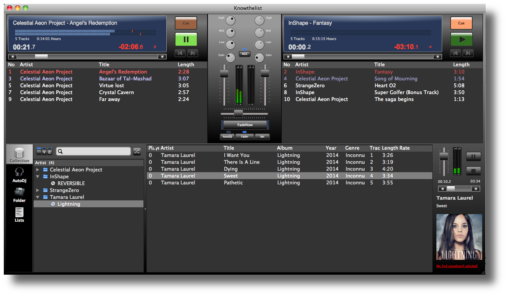

knowthelist
Knowthelist - the awesome party music player
- Easy to use for all party guests
- Quick search for tracks in collection
- Two players with separate playlists
- Mixer with fader, 3 channel EQ and gain
- Auto fader and auto gain
- Trackanalyser search for song start/end and gain setting
- Auto DJ function with multiple filters for random play
- Monitor player for pre listen tracks (via 2nd sound card e.g. USB)
- ... more https://github.com/knowthelist/knowthelist/wiki
Runs under Linux, MacOS and Windows
What is Knowthelist?
Knowthelist is an easy to use music player for DJing. Two separate players with their own playlists. A mixer with volume fader, 3 channel equalizer and cross fader. Newly to the player added tracks will be analyzed automatically in the background by a track analyzer to detecting silence and volume of the track. The retrieved start and end timestamps enable gapless playing and the determined volume value can be used to sustain a constant loudness over all songs. Tracks are added from a music collection or directly from the filesystem. The music collection has a quick find function by just typing key words into the search field. Collection tree, found tracks and the playlists remain always clearly structured in one view. No unnecessary clicks to switch between views.

Get install packages for Linux here